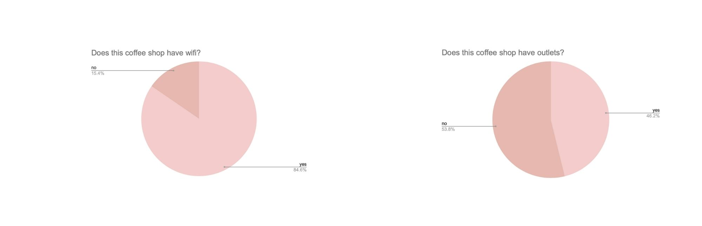
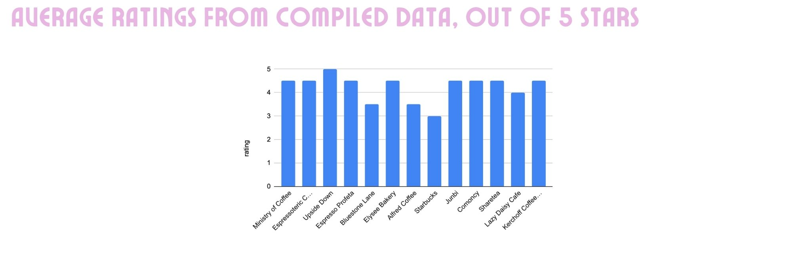

Data Science Project: Exploring best coffee joints in Westwood.
Believe it or not, caffeine calms my mind. I dont think there is a day that goes by at UCLA where I miss my morning cup of coffee. Lucky for me, there is a slew of cute cafés in Westwood village, and I have yet to explore them all. I wanted to put my debilitating caffeine addiction to good use with this independent data science project and aggregate the opinions of my fellow peers on the topic of coffee. What is the best coffee joint in Westwood?
1. Defining my data sources
I used both Google Maps and Yelp to data scrap the top 14 coffee shops in Westwood, reviewing top ratings and crowd-sourced reviews. I wanted to include the opinion of my peers as well, so I ran an additional survey to gather data and information about the best coffee shops in Westwood from 15 UCLA students. I combined and compiled the data from online and from UCLA students into one congruent data source.
2. Webscrapping and compilating data
My data from the web-mapping platforms was scrapped using Webscaper Chrome Extension. This data along with my UCLA student data was linked and exported into a single CSV file. The relevant parameters were listed according to source, including whether or not the shop includes wifi, outlets, and its proximity to UCLA campus.3. Tableau Prep and Execution
My data was imported into Tableau Prep and scanned for error. Only data relevant to analysis was exported to the map. I used Tableau Desktop to run data visualizations based on my key parameters listed above. These key variables are what I and my fellow peers consider to constitute a 'top-tier' Westwood café. Finally, I uploaded and published the Tableau Dashboard and embedded the HTML from the Tableau documentation.Analysis
  There is a positive correlation between cafe rating, presence of outlets, and option of wifi. The shops with the highest ratings either have wifi, outlets, or both, which confirms my theory of key variables for UCLA students. One outlier in my data is the Starbucks. The location has wifi but its ratings are exceptionally low. This is likely due to the fact that it is the farthest datapoint on the map and is not frequented by UCLA students. There is a secondary Starbucks much closer to the village but it was not included in the dataset. This would explain the exceptionally low ratings for the Starbucks data point. Thus, we can consider proximity to UCLA as a good indicator for high ratings.Final recommendation
Through this data analysis, I have come up with a final reccomendation factoring in the key variables of rating, proximity to UCLA, wifi, and outlets. All of the data analysis supports Upside Down as the best coffee shop in Westwood village. With it being a five minute walk from campus, its free outlets and wifi, and its affordable prices, I highly recommend you visit next time you find yourself in Los Angeles.